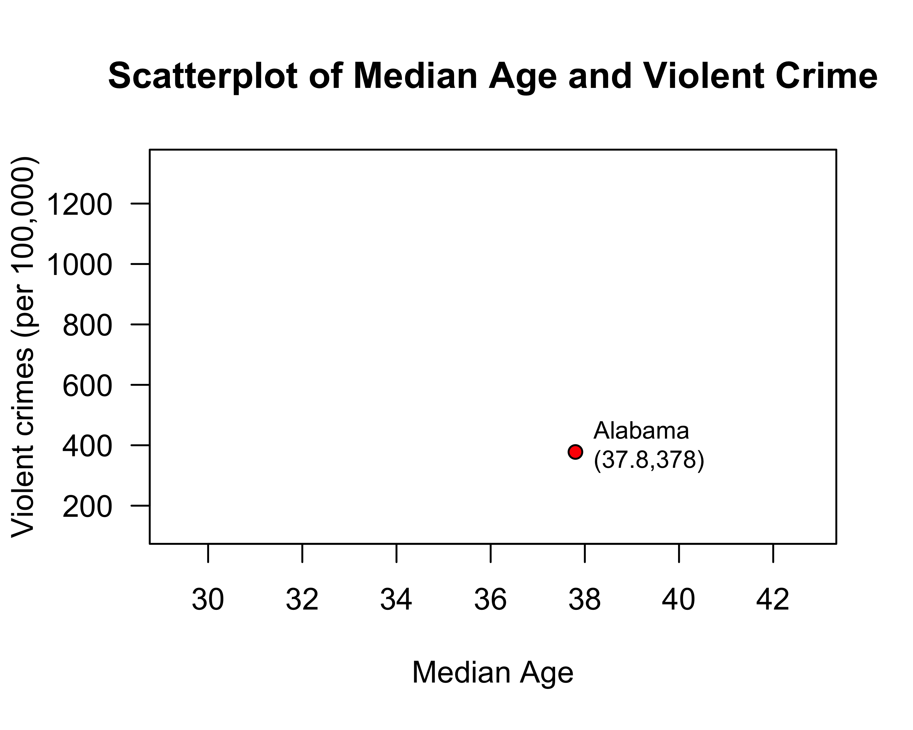
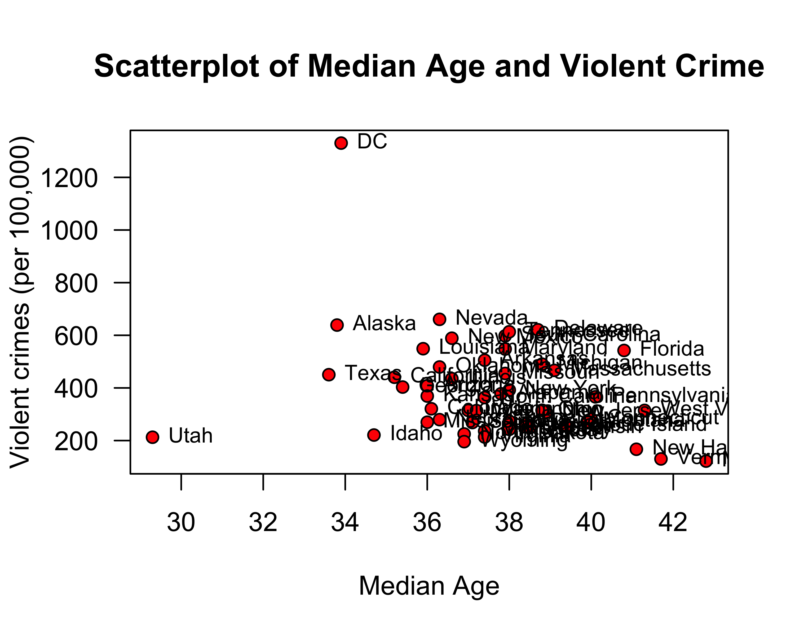
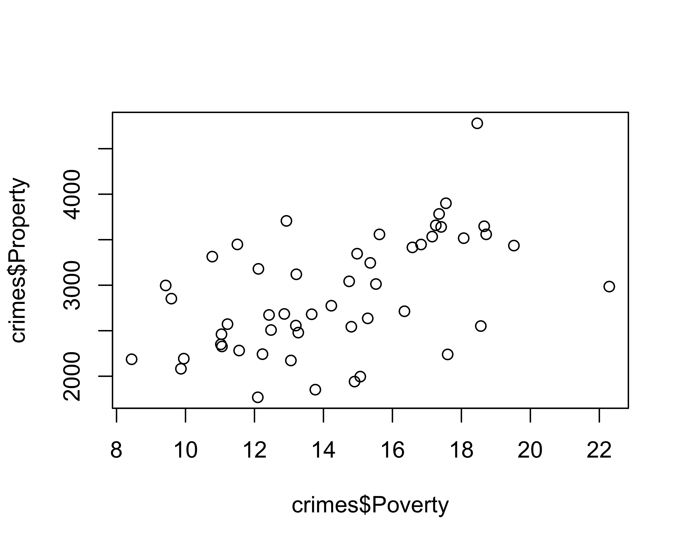
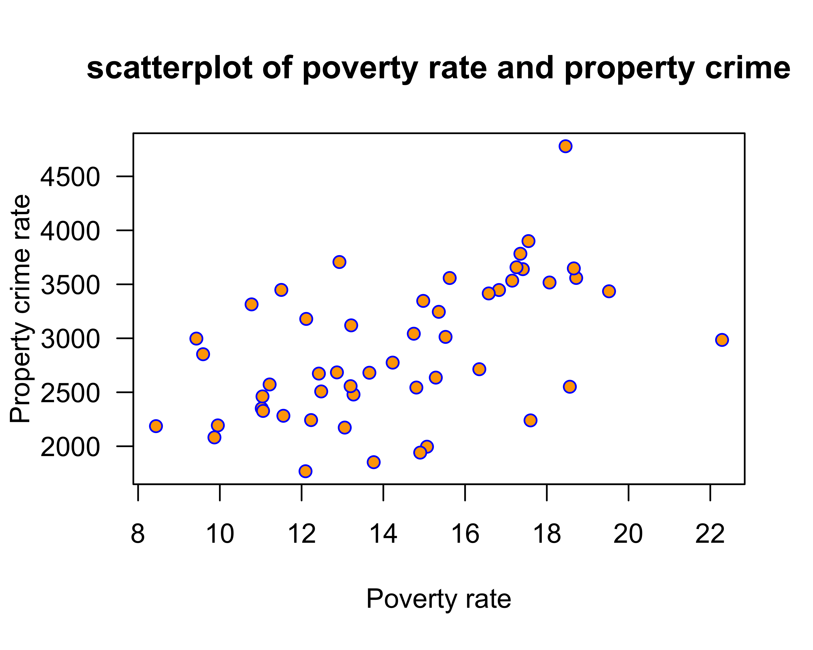
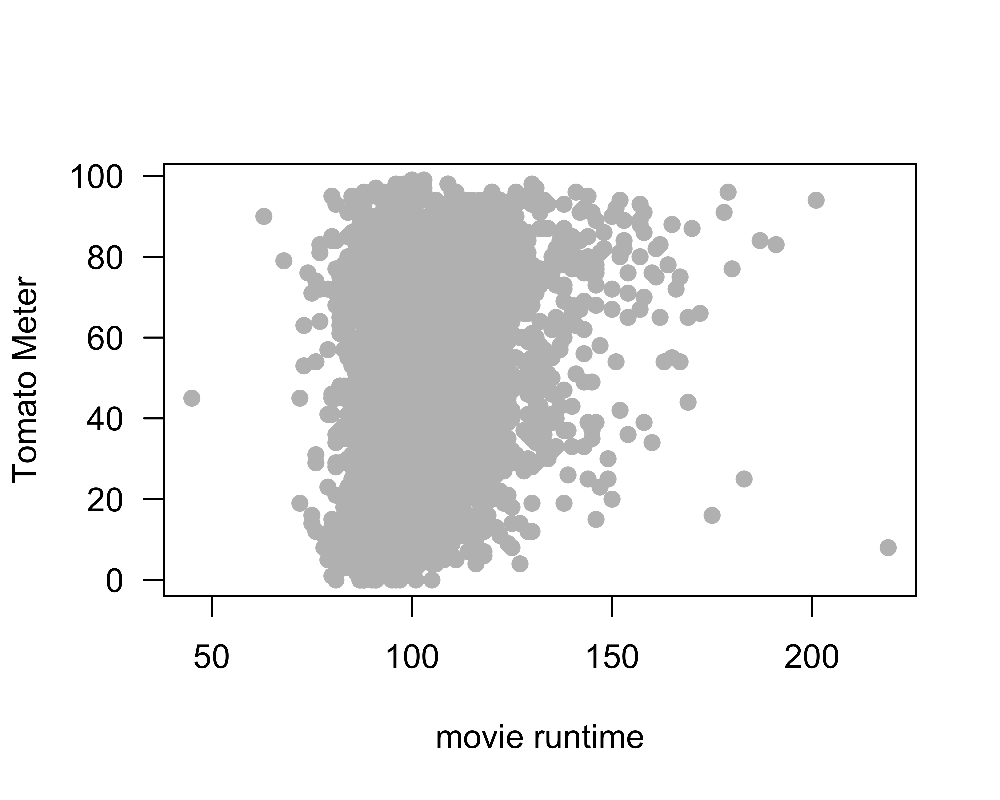
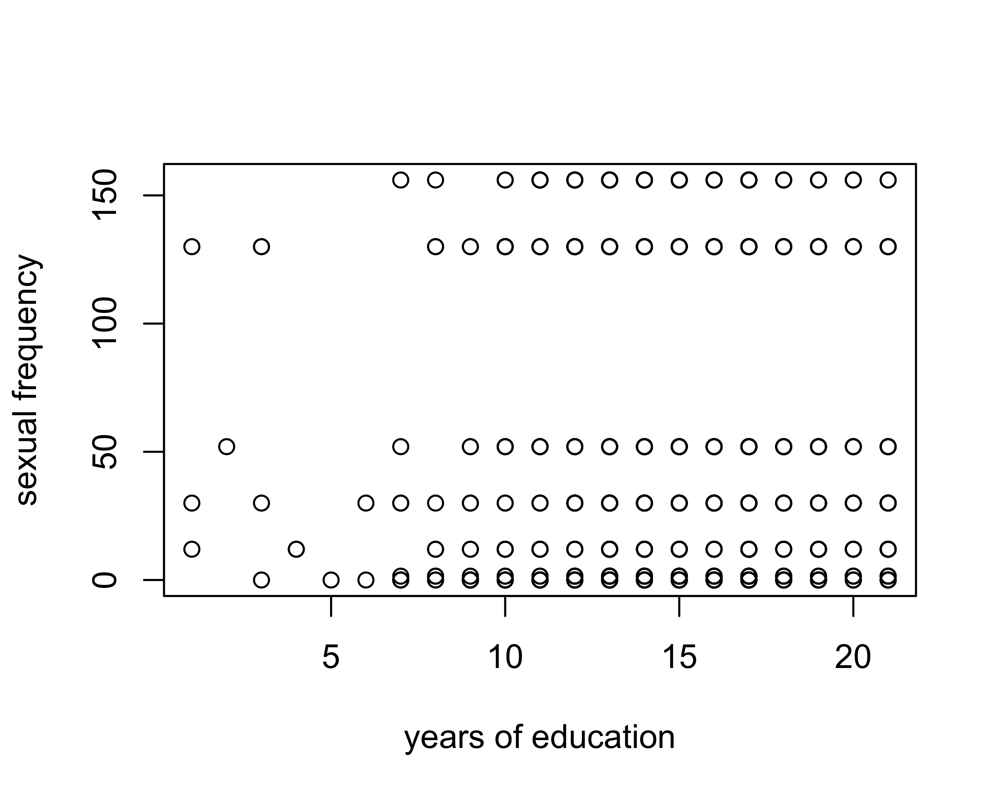
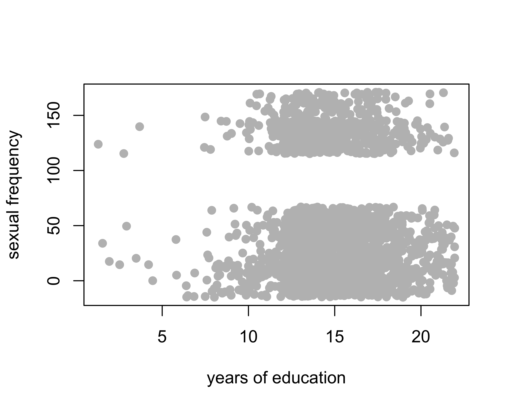
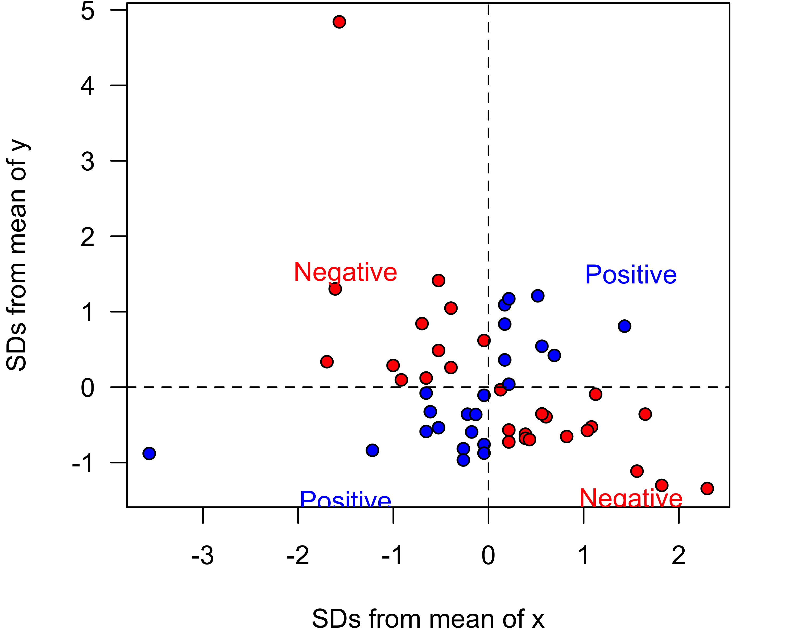
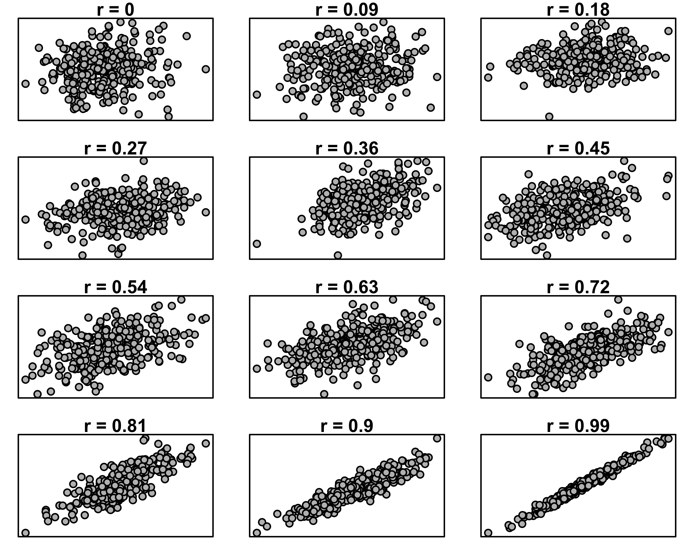

Scatterplot and Correlation Coefficient
The techniques for looking at the association between two quantitative variables are more developed than the other two cases, so we will spend more time on this topic. Additionally, the major approach here of ordinary least squares regression turns out to be a very flexible, extendable method that we will build on later in the term.
When examining the association between two quantitative variables, we usually distinguish the two variables by referring to one variable as the dependent variable and the other variable as the independent variable. The dependent variable is the variable whose outcome we are interested in predicting. The independent variable is the variable that we treat as the predictor of the dependent variable. For example, lets say we were interested in the relationship between income inequality and life expectancy. We are interested in predicting life expectancy by income inequality, so the dependent variable is life expectancy and the independent variable is income inequality.
The language of dependent vs. independent variable is causal, but its important to remember that we are only measuring the association. That association is the same regardless of which variable we set as the dependent and which we set as the independent. Thus, the selection of the dependent and independent variable is more about which way it more intuitively makes sense to interpret our results.
The scatterplot
We can examine the relationship between two quantitative variables by constructing a scatterplot. A scatterplot is a two-dimensional graph. We put the independent variable on the x-axis and the dependent variable on the y-axis. For this reason, we often refer generically to the independent variable as x and the dependent variable generically as y.
To construct the scatterplot, we plot each observation as a point, based on the value of its independent and dependent variable. For example, lets say we are interested in the relationship between the median age of the state population and violent crime in our crime data. Our first observation, Alabama, has a median age of 37.8 and a violent crime rate of 378 crimes per 100,000. We can plot this point on our graph as follows:

If I repeat that process for all of my observations, I will get a scatterplot that looks like:

It is not necessary to show the names of states here, but I have done so here in order to identify individual observations.
What are we looking for when we look at a scatterplot? There are four important questions we can ask of the scatterplot. First, what is the direction of the relationship. We refer to a relationship as positive if both variables move in the same direction. if y tends to be higher when x is higher and y tends to be lower when x is lower, then we have a positive relationship. On the other hand, if the variables move in opposite directions, then we have a negative relationship. If y tends to be lower when x is higher and y tends to be higher when x is lower, then we have a negative relationship. In the case above, it seems like we have a generally negative relationship. States with higher median age tend to have lower violent crime rates.
Second, is the relationship linear? I don’t mean here that the points fall exactly on a straight line (which is part of the next question) but rather does the general shape of the points appear to have any “curve” to it. If it has a curve to it, then the relationship would be non-linear. This issue will become important later, because our two primary measures of association are based on the assumption of a linear relationship. In this case, there is no evidence that the relationship is non-linear.
Third, what is the strength of the relationship. If all the points fall exactly on a straight line, then we have a very strong relationship. On the other hand, if the points form a broad elliptical cloud, then we have a weak relationship. In practice, in the social sciences, we never expect our data to conform very closely to a straight line. Judging the strength of a relationship often takes practice. I would say the relationship above is of moderate strength.
Fourth, are there outliers? We are particularly concerned about outliers that go against the general trend of the data, because these may exert a strong influence on our later measurements of association. In this case, there are two clear outliers, Washington DC and Utah. Washington DC is an outlier because it has an extremely high level of violent crime relative to the rest of the data. Its median age tends to be on the younger side, so its placement is not inconsistent with the general trend. Utah is an outlier that goes directly against the general trend because it has one of the lowest violent crime rates and the youngest populations. This is, of course, driven by Utah’s heavily Mormon population, who both have high rates of fertility (leading to a young population) and whose church communities are able to exert a remarkable degree of social control over these young populations.
Constructing scatterplots in R
You can construct scatterplots in R with the plot command. At a very basic level, you can just feed in the independent and dependent variables:
plot(crimes$Poverty, crimes$Property)
We can improve on this command with our usual bells and whistles to label x and y axes, titles, etc. We can also use the pch option to define different dots for our points. If you pull up the help command ?points, it will show a list of codes for all the different points you can use. I like to use pch=21 because it will draw circles where you can color in both the center and the border. For example:
plot(crimes$Poverty, crimes$Property,
xlab="Poverty rate", ylab="Property crime rate",
main="scatterplot of poverty rate and property crime",
las=1, pch=21, bg="orange", col="blue")
Sometimes with large datasets, scatterplots can be difficult to read because of the problem of overplotting. This happens when many data points overlap, so that its difficult to see how many points are showing. For example:
plot(movies$Runtime, movies$TomatoMeter, pch=21, bg="grey", col="grey", las=1,
xlab="movie runtime", ylab="Tomato Meter")
Because so many movies are in that 90-120 minute range it is difficult to distinguish them and thus a little tricky to summarize the relationship. There are more advanced ways we can address this issue, but these are beyond our introductory class.
Overplotting can also be a problem with discrete variables because these variables can only take on certain values which will then exactly overlap with one another. For example:
plot(sex$educ, sex$sexf,
xlab="years of education", ylab="sexual frequency")
Both of these variables are discrete and thus only take certain values, so all we see on the graph is more or less every possible point based on the possible values of education and sexual frequency. Multiple points are plotted directly on top of each other. We can fix this issue more easily by applying the jitter command which just adds a random amount to each observation so they don’t exactly overlap. You often have to experiment with jitter to find just how much randomness (the second option) you have to apply.
plot(jitter(sex$educ,5), jitter(sex$sexf,50),
xlab="years of education", ylab="sexual frequency",
pch=21, bg="grey", col="grey")
In this case, because of the large number of observations we still have a lot of overplotting.
The correlation coefficient
We can measure the association between two quantitative variables with the correlation coefficient, r. The formula for the correlation coefficient is:
\[r=\frac{1}{n-1}\sum_{i=1}^n (\frac{x_i-\bar{x}}{s_x}*\frac{y_i-\bar{y}}{s_y})\]
That looks complicated, but lets break it down step by step. We will use the association between median age and violent crimes as our example.
The first step is to subtract the means from each of our x and y variables. This will give us the distance above or below the mean for each variable.
diffx <- crimes$MedianAge-mean(crimes$MedianAge)
diffy <- crimes$Violent-mean(crimes$Violent)The second step is to divide these differences from the mean of x and y by the standard deviation of x and y, respectively.
diffx.sd <- diffx/sd(crimes$MedianAge)
diffy.sd <- diffy/sd(crimes$Violent)Now each of your x and y values have been converted from their original form into the number of standard deviations above or below the mean. This is often called standarization. By doing this, we have put both variables on the same scale and have removed whatever original units they were measured in (in our case, years of age and crimes per 100,000).
The third step is to to multiply each converted value of x by each converted value of y.
product <- diffx.sd*diffy.sdWhy do we do this? First consider this scatterplot of our standardized x and y:

Points shown in blue have either both positive or both negative x and y values. When you take the product of these two numbers, you will get a positive product. This is evidence of a positive relationship. Points shown in red have one positive and one negative x and y value. When you take the product of these two numbers, you will get a negative product. This is evidence of a negative relationship.
The final step is to add up all this evidence of a positive and negative relationship and divide by the number of observations (minus one).
sum(product)/(length(product)-1)## [1] -0.3015232This final value is our correlation coefficient. We could have also calculated it by using the cor command:
cor(crimes$MedianAge, crimes$Violent)## [1] -0.3015232How do we interpret this correlation coefficient? It turns out the correlation coefficient r has some really nice properties. First, the sign of r indicates the direction of the relationship. If r is positive, the association is positive. If r is negative, the association is negative. if r is zero, there is no association.
Second, r has a maximum value of 1 and a minimum value of -1. These cases will only happen if the points line up exactly on a straight line, which never happens with social science data. However, it gives us some benchmark to measure the strength of our relationship. Here are some simulated scatterplots with different r in order to help you get a sense of the strength of association for different values of r.

Third, r is a unitless measure of association. It can be compared across different variables and different datasets in order to make a comparison of the strength of association. For example, the correlation coefficient between unemployment and violent crimes is 0.45. Thus, violent crimes are more strongly correlated with unemployment than with median age (0.44>0.30). The association between median age and property crimes is -0.36, so median age is more strongly related to property crimes than violent crimes (0.36>0.30).
There are some important cautions when using the correlation coefficient. First, the correlation coefficient will only give a proper measure of association when the underlying relationship is linear. if there is a non-linear (curved) relationship, then r will not correctly estimate the association. Second, the correlation coefficient can be affected by outliers. We will explore this issue of outliers and influential points more in later sections.